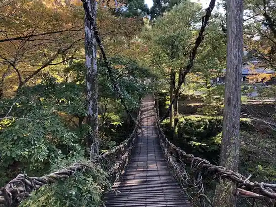
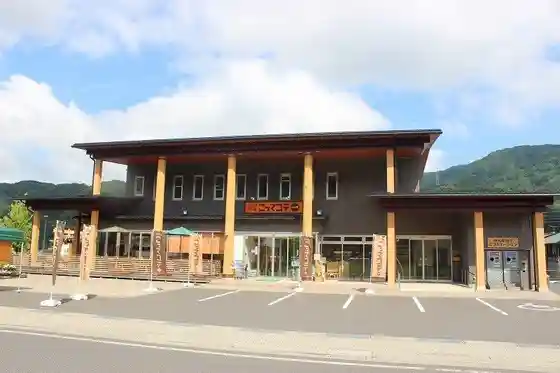

Kazura Hashi
Fukuiikeda, Fukui · 0778-44-6878 · Official / source link

Ryu Sogataki
Fukuiikeda, Fukui · 0778-44-8060 · Official / source link
Tsuriipikunikkuadobencha Ikeda
Fukuiikeda, Fukui · 0778-44-7474 · Official / source link
Keiryu Onsen Kan So
Fukuiikeda, Fukui · 0778-44-7755 · Official / source link
Machi no Eki Kotte Kote Ikeda
Fukuiikeda, Fukui · 0778-44-8050 · Official / source link

Heko Yama
Fukuiikeda, Fukui · 0778-44-8060 · Official / source link
Soba no Sato Fukuiikeda Ya
Fukuiikeda, Fukui · 0778-44-6878 · Official / source link
U Kan Shrine (Fukuiikeda)
Fukuiikeda, Fukui · 0778-44-8060 · Official / source link
Mori to Kawa no Promenade
Fukuiikeda, Fukui · 0778-44-8060 · Official / source link
Michi no Oashisu Foshiizunterasu
Fukuiikeda, Fukui · 0778-44-6060 · Official / source link
Nomen Art Museum
Fukuiikeda, Fukui · 0778-44-7757 · Official / source link
Asobi Hausu Kodomoto Mori
Fukuiikeda, Fukui · 0778-67-5190 · Official / source link
Amachi no Yado
Fukuiikeda, Fukui · 0778-44-6468 · Official / source link
O Ana Gun
Fukuiikeda, Fukui · 0778-44-8060 · Official / source link
Uddorabo Ikeda
Fukuiikeda, Fukui · 0778-44-6270 · Official / source link
Kanmuriyama
Fukuiikeda, Fukui · 0778-44-8060 · Official / source link
Fukuiikeda Ritsu Kuraiminguoru
Fukuiikeda, Fukui · 0778-44-6181 · Official / source link
Sunami A Shrine
Fukuiikeda, Fukui · 0778-44-6365 · Official / source link
Hakusan Shrine (Fukuiikeda)
Fukuiikeda, Fukui · 0778-44-8060 · Official / source link
Umeda Shi Garden (Kuni Shitei Meisho)
Fukuiikeda, Fukui · 0778-44-6106 · Official / source link
Shimbo Famirii Ski Area
Fukuiikeda, Fukui · 0778-44-7787 · Official / source link
Rentasaikuru - Fukuiikeda - Ikeda no Village Kanko Kosha
Fukuiikeda, Fukui · 0778-44-8060 · Official / source link
Inari no Osugi
Fukuiikeda, Fukui · 0778-44-6365 · Official / source link
Horiguchi Ie House
Fukuiikeda, Fukui · 0778-44-8006 · Official / source link
Fukuiikeda Town Hall
Fukuiikeda, Fukui · 0778-44-6000 · Official / source link